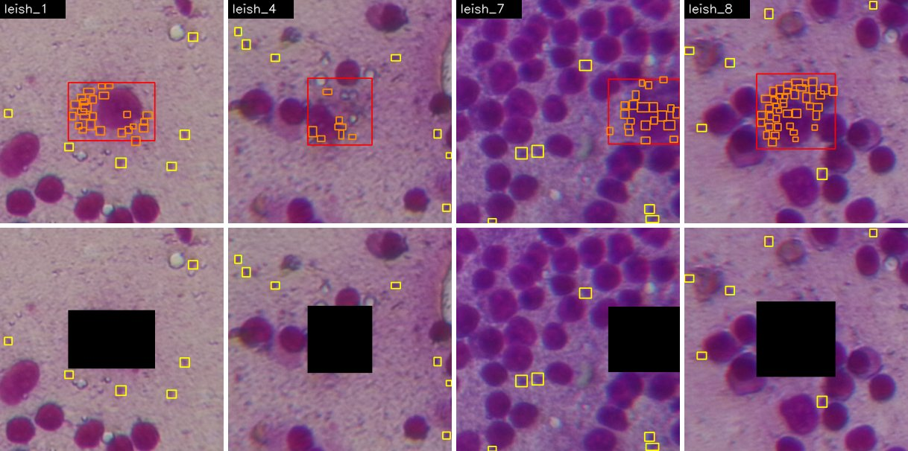

exp16 — YOLO11n com os hiperparâmetros encontrados pelo Optuna
Objetivo: repetir o exp08 (YOLO11n sobre os recortes com o macrófago mascarado, batch 16; mAP50 0,485 ± 0,109) usando, em cada fold, os 7 hiperparâmetros que o Optuna escolheu para esse fold no exp15 (YOLO11l; mAP50 0,510 ± 0,115). Não há nova busca.
Pergunta: os hiperparâmetros encontrados com o YOLO11l também servem para o YOLO11n, que treina ~5× mais rápido? Se sim, a busca, que é cara, pode ser feita uma vez e reaproveitada nos outros modelos.
Por que os parâmetros de cada fold, e não um valor único
No exp15, os parâmetros do fold k foram escolhidos olhando só a lâmina de validação desse fold. Um valor único (por exemplo, a mediana dos 6 folds) misturaria as escolhas de todos os folds. Como a lâmina de validação de um fold é lâmina de teste de outro (a leish_4 valida o fold 1 e é teste no fold 4), isso deixaria informação do teste vazar para o treino. Usando os parâmetros do próprio fold, as lâminas de teste continuam sem participar de nenhuma escolha.
Configuração
| Fold | lr0 | weight_decay | hsv_s | hsv_v | degrees | scale | mixup |
|---|---|---|---|---|---|---|---|
| 1 | 1,0e-4 | 1,3e-4 | 0,20 | 0,22 | 0,7 | 0,59 | 0,29 |
| 2 | 1,2e-4 | 1,0e-4 | 0,41 | 0,69 | 29,0 | 0,25 | 0,00 |
| 3 | 1,6e-4 | 1,7e-5 | 0,64 | 0,63 | 19,5 | 0,60 | 0,14 |
| 4 | 2,7e-4 | 1,5e-4 | 0,21 | 0,38 | 29,2 | 0,37 | 0,27 |
| 5 | 1,1e-4 | 1,7e-5 | 0,24 | 0,53 | 29,6 | 0,35 | 0,30 |
| 6 | 1,2e-4 | 1,1e-5 | 0,23 | 0,45 | 29,9 | 0,20 | 0,02 |
| exp08 | 5,0e-4 | 5,0e-4 | 0,90 | 0,60 | 15 | 0,50 | 0,10 |
O resto é igual ao exp08: YOLO11n, dataset 03_recortes_512_sem_macrofago, imgsz 512, batch 16, AdamW, lrf 0,01, cos_lr, 150 épocas, patience 40, hsv_h 0,03, flipud 0,5, mosaico, seed 42.
Limitação: os parâmetros foram escolhidos para o YOLO11l com batch 8. O ótimo do YOLO11n pode ser outro (modelos menores costumam aceitar lr maior). O batch muda pouco, porque a Ultralytics acumula gradientes até um batch nominal de 64 nos dois casos.
| Notebook | exp16_yolo11n_params_optuna.ipynb |
| Parâmetros | lidos de ../exp15_yolo11l_optuna/optuna/melhores_parametros.json |
| Bases | exp08 (mesmo modelo, hiperparâmetros à mão) e exp15 (mesmos hiperparâmetros, YOLO11l) |
| Status | concluído em 18 nov. 2026 (14h30–14h50, 20 minutos; o exp15 levou 2,5 h) |
Exemplos das imagens de entrada

Resultado
| Modelo | Hiperparâmetros | Precisão | Recall | mAP50 | mAP50-95 | Tempo | |
|---|---|---|---|---|---|---|---|
| exp16 | YOLO11n | do Optuna (exp15) | 0,525 ± 0,110 | 0,566 ± 0,055 | 0,509 ± 0,109 | 0,196 ± 0,039 | 20 min |
| exp08 | YOLO11n | à mão | 0,508 ± 0,102 | 0,547 ± 0,074 | 0,485 ± 0,109 | 0,184 ± 0,039 | ~20 min |
| exp15 | YOLO11l | do Optuna | 0,520 ± 0,116 | 0,569 ± 0,064 | 0,510 ± 0,115 | 0,199 ± 0,040 | 2,5 h |
Conclusões:
- Sim, os hiperparâmetros encontrados com o YOLO11l servem para o YOLO11n. O nano chegou a 0,509, praticamente igual ao exp15 (0,510), em 20 minutos em vez de 2,5 horas.
- Contra o exp08 (mesmo modelo, hiperparâmetros à mão), as quatro métricas subiram: +0,024 de mAP50, +0,012 de mAP50-95, +0,017 de precisão e +0,019 de recall. O ganho no mAP50 continua abaixo do limiar de ruído (0,03), mas é o maior obtido sobre o exp08 nesta série (exp11–14 ficaram entre +0,002 e +0,011).
- Melhorou 4 dos 6 folds (folds 1, 2, 3 e 6). Os folds 4 e 5 ficaram praticamente iguais (−0,004 e −0,016).
- Os dois experimentos com os parâmetros do Optuna (exp15 e exp16) ficaram no topo, com modelos de tamanhos muito diferentes. Isso reforça que o ganho vem dos hiperparâmetros, não do modelo.
- Nova melhor configuração custo-benefício: YOLO11n com os hiperparâmetros do exp15.
Por fold (mAP50 no teste)
| Fold | Lâminas de teste | Épocas (melhor) | exp16 | exp08 | Δ exp08 | exp15 |
|---|---|---|---|---|---|---|
| 1 | leish_3, leish_5 | 62 (22) | 0,569 | 0,534 | +0,035 | 0,595 |
| 2 | leish_2, leish_7 | 124 (114) | 0,641 | 0,574 | +0,066 | 0,612 |
| 3 | leish_1, leish_8 | 116 (47) | 0,372 | 0,354 | +0,019 | 0,375 |
| 4 | leish_4, leish_9 | 80 (70) | 0,472 | 0,476 | −0,004 | 0,510 |
| 5 | leish_1, leish_7 | 55 (15) | 0,596 | 0,612 | −0,016 | 0,606 |
| 6 | leish_2, leish_8 | 95 (55) | 0,403 | 0,360 | +0,043 | 0,364 |
"Épocas (melhor)": épocas até o early stopping e, entre parênteses, a época do best.pt. Como no exp15, o fold 5 atinge o pico cedo (época 15).
Por lâmina (mAP50 no teste)
| Lâmina | exp16 | exp08 | Δ | exp15 |
|---|---|---|---|---|
| leish_1 | 0,545 | 0,525 | +0,020 | 0,518 |
| leish_2 | 0,392 | 0,399 | −0,007 | 0,343 |
| leish_3 | 0,392 | 0,359 | +0,033 | 0,272 |
| leish_4 | 0,187 | 0,184 | +0,003 | 0,222 |
| leish_5 | 0,572 | 0,536 | +0,036 | 0,600 |
| leish_7 | 0,688 | 0,672 | +0,016 | 0,698 |
| leish_8 | 0,390 | 0,359 | +0,031 | 0,373 |
| leish_9 | 0,535 | 0,590 | −0,055 | 0,589 |
Melhorou 6 das 8 lâminas. A leish_8 (0,390) e a leish_3 (0,392) tiveram os maiores valores de toda a série. A leish_4 continua a pior (0,187) e não acompanhou o ganho que teve no exp15 (0,222). A leish_9 caiu 0,055, toda no fold 4.
Próximo passo sugerido
- Usar esta configuração (YOLO11n + parâmetros do exp15) como nova base dos próximos experimentos, porque é rápida (20 min) e está no topo.
- Aplicar os mesmos parâmetros a outros modelos (YOLO11s/m, YOLO26n, YOLOv8n) sem nova busca, cerca de 20 a 40 min cada.
- Repetir com 2 ou 3 seeds para saber se o +0,024 sobre o exp08 é real.